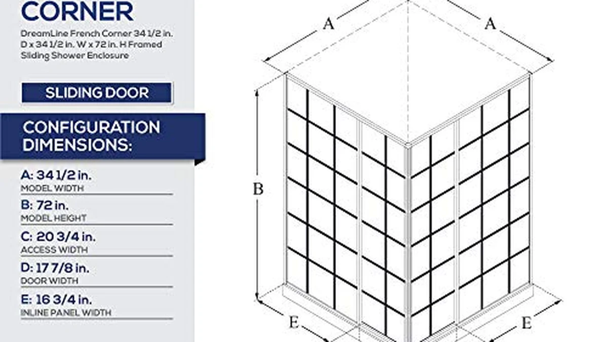

Things to Know Before You Buy
- The door is not the shower base. Unless you buy a corner enclosure kit, the door hardware does not include a pan or tray. Confirm your base or tiled curb first, then match the door to it.
- Measure the opening at three heights. Bathroom walls are rarely plumb. Measure the width at the top, middle, and bottom, then buy a door whose adjustable range covers your smallest number.
- Sliding needs no swing room; pivot does. Bypass and sliding doors are ideal for tubs and tight alcoves. A hinged or pivot door needs clear floor space to swing open without hitting a vanity or toilet.
- Thicker glass costs more and installs harder. 3/8" (10mm) frameless glass looks premium but is heavy and usually a two-person job. 1/4" (6mm) framed doors are lighter, cheaper, and seal water better.
- Confirm the plumbing and wall side. Most doors are reversible, but you still need to know which side your fixed panel, wall, and drain sit on before you order.
A shower door is one of those purchases that looks simple until you are standing in the aisle staring at terms like "neo-angle," "semi-frameless," and "3/8-inch tempered." The truth is that the right door is mostly a question of your space and your opening, not brand hype. Get the type and the measurements right and almost any reputable door will serve you well for a decade. Get them wrong and you end up with a door that leaks, will not open, or does not fit at all.
This guide walks through the four decisions that actually matter: the door type (sliding, pivot, or corner), the frame style (framed, semi-frameless, or frameless), the glass (thickness, finish, and coatings), and how to measure your opening so the door you order actually fits the wall you have. None of it requires a contractor's vocabulary.
By the end you should be able to look at your bathroom, take three quick measurements, and know exactly which category of door to shop for and what to avoid. We finish with three picks that cover most situations, from a budget sliding door to a premium frameless corner enclosure.
What You Need to Know
Before you compare products, it helps to know what a shower door actually is and is not. A shower door is the glass barrier and its hardware. In most cases it does not include the shower base, pan, or tray you stand on, and it never includes the plumbing. Enclosure kits (like a corner unit) are the exception because they bundle two glass panels and sometimes a base, but even then you should read the listing carefully to see exactly what ships in the box.
Four attributes define every door you will look at:
- Type — how the door moves: sliding (bypass), pivot or hinged, or a corner/neo-angle configuration for corner showers.
- Frame — how much metal surrounds the glass: framed, semi-frameless, or frameless.
- Glass — the thickness (usually 1/4" or 3/8"), the finish (clear, frosted, or rain), and any coating.
- Fit — the adjustable width range and height the door is built to cover.
Almost every buying mistake traces back to getting one of these four wrong. A gorgeous frameless door is useless if it cannot swing open in your bathroom, and a bargain sliding door is a headache if its adjustable range does not reach your opening width. Keep these four in mind as you read the rest of the guide.
Types and Categories
Door types
Sliding (bypass) doors run on a top and bottom track, with one panel passing behind the other. Because nothing swings out, they are the go-to choice for alcoves, tight bathrooms, and shower-over-tub setups where you have no room for a door to open into the space. The trade-off is a slightly narrower entry (you only ever get half the opening) and a bottom track that collects grime and needs regular cleaning.
Pivot and hinged doors swing open on a hinge, giving you the full width of the opening to step through. They feel more open and luxurious and are easier to clean because there is no bottom track. The catch is that they need clear floor space to swing, and most require a small clearance gap at the bottom, so they suit walk-in showers with a proper curb rather than over-tub installs.
Corner and neo-angle doors are built for showers set into a corner. A neo-angle uses two angled glass panels that meet at a diagonal door, maximizing floor space in a small bathroom. Corner enclosure kits often include both panels and sometimes the base, making them the most complete (and usually priciest) option.
Frame styles
Framed doors surround every glass edge with metal. They are the cheapest, the easiest to install, and they seal water best thanks to the built-in tracks and gaskets, but the visible aluminum reads as more dated and the frame traps soap scum.
Semi-frameless doors keep a frame on the fixed panel or perimeter but leave the moving edge frameless. This is the balanced middle ground: cleaner looks than framed, less cost and weight than fully frameless.
Frameless doors use no perimeter metal at all, held by minimal clips and hinges on thick tempered glass. They look the most high-end, are the easiest to wipe down, and are the most expensive. They also demand thicker glass, careful installation, and good silicone sealing to stay watertight.
How to Choose
Glass: thickness, finish, and coatings
All shower glass sold in the US must be tempered safety glass that meets ANSI Z97.1 and CPSC 16 CFR 1201 standards, so it shatters into small blunt pieces rather than shards. That is non-negotiable; verify it is listed before you buy.
Thickness is the next call. 3/8" (10mm) glass is sturdy, feels solid, and is standard on quality frameless doors, but it is heavy and pricier. 1/4" (6mm) glass is lighter, cheaper, and common on framed and semi-frameless doors, and it is perfectly fine when a frame supports it. Under-buying thickness on a frameless door is a common regret, since thin unframed glass flexes and feels cheap.
For finish, clear glass shows off tile and makes a small bathroom feel bigger but reveals every water spot; frosted or rain glass adds privacy and hides spotting at the cost of light. An optional nano or hydrophobic coating makes water bead and roll off, cutting down on cleaning; it is worth the upgrade on clear glass if the listing offers it.
How to measure your opening
This is where most returns come from, so take your time:
- Measure the width at three heights — top, middle, and bottom. Walls lean, so these numbers will differ. Use the smallest one when matching to a door's adjustable range.
- Most doors fit a range, for example 56-60". Make sure your smallest width falls inside that range with room to spare.
- Measure the height from the curb or base to where the door top will sit, and confirm the door's height covers it.
- Note which side your wall, fixed panel, and plumbing sit on. Many doors are reversible, but you still need to plan the layout.
Installation reality
A framed 1/4" sliding door is a manageable weekend DIY. A frameless 3/8" door is heavy and awkward and is genuinely a two-person job — you will need to hit studs or use proper wall anchors, seal every seam with silicone, and check everything with a level as you go. Budget for a level, a drill, masking tape, and quality sealant. If that sounds like more than you want to take on, a professional install typically runs $200-$500 depending on door type and wall condition.
Common Mistakes to Avoid
Nearly every unhappy shower-door story comes down to one of these avoidable errors:
- Measuring at only one height. If you measure the width in just one spot, an out-of-plumb wall will leave you with a door that binds or leaves a gap. Always measure top, middle, and bottom.
- Buying a pivot door where it cannot swing. A hinged door that opens into a vanity, toilet, or opposite wall is a daily annoyance. Confirm the swing clearance before you fall in love with the look.
- Forgetting the base or pan. The door and the shower floor are usually separate purchases. Order a door without confirming your base and you may find the sizes or curb do not match.
- Under-buying glass thickness. Choosing thin 1/4" glass for a frameless look leaves you with a flexy, cheap-feeling door. Frameless wants 3/8".
- Ignoring the drain and plumbing side. If the fixed panel or entry ends up on the wrong side relative to your valve and drain, the install gets awkward fast. Map the layout before ordering.
Care and Maintenance
A shower door lasts far longer when you give it a few minutes of care:
- Squeegee after every shower. Thirty seconds with a squeegee removes the water and minerals that otherwise dry into hard-to-clean spots, especially on clear glass.
- Clean the track or hinges. Sliding doors collect grime in the bottom track, so flush and wipe it regularly. Pivot doors have hinges instead; keep them clean and check that they stay tight.
- Skip abrasive cleaners. Scrubbing pads and harsh chemicals can strip a hydrophobic coating and dull the glass. Use a gentle glass cleaner or a vinegar solution, and reserve stronger products for uncoated glass only.
- Inspect the seals yearly. The rubber sweeps and gaskets that keep water inside wear out over time. Check them once a year and replace any that are cracked or no longer sealing — they are cheap and easy to swap.
None of this is demanding, but the squeegee habit alone is the single biggest factor in whether your glass still looks new in five years.
Our Top Picks
These three doors cover the situations most shoppers land in — a premium frameless slider, a genuine budget pick, and a corner enclosure for corner showers. Prices are current at the time of writing and shift often on Amazon, so check the live price before buying.

Editor’s Pick
Woodbridge 57.5-60" Wx76 H Soft
A frameless sliding door with soft-close rollers and thick tempered glass, built for alcoves and tub-to-shower conversions. The premium look and smooth glide justify the price if you want frameless without a swing.
$615.12
Check Price on Amazon
Best Value
UCALAFEE Shower Door 44-48" W
Proof you do not need to overspend: a clean sliding door that fits a 44-48" opening for a fraction of the frameless options. Ideal for a straightforward alcove or tub install on a budget.
$229.99
Check Price on Amazon
Premium Choice
DreamLine French Corner 34 1/2
A neo-angle corner enclosure that turns an awkward corner into a proper walk-in shower, maximizing floor space. The premium pick when your layout calls for a corner rather than a straight opening.
$637.49
Check Price on AmazonFrequently Asked Questions
How do I measure for a shower door?
Measure the opening width at three heights — top, middle, and bottom — because walls are rarely perfectly plumb. Use the smallest measurement to match a door's adjustable range (for example 56-60"). Also measure the height, and note which side your wall, fixed panel, and plumbing are on, since many doors are reversible but the layout still has to line up.
What thickness of shower glass should I get?
For a framed or semi-frameless door, 1/4" (6mm) tempered glass is lighter, cheaper, and perfectly sturdy because the frame supports it. For a frameless door, choose 3/8" (10mm) glass — thin, unframed glass flexes and feels cheap. Whatever you pick, make sure it is tempered safety glass meeting ANSI and CPSC standards.
Sliding or pivot — which door should I choose?
Choose a sliding (bypass) door for tight bathrooms, alcoves, and shower-over-tub setups, since nothing swings into the room. Choose a pivot or hinged door for walk-in showers with clear floor space, where you want the full opening width and easier cleaning with no bottom track. If your shower sits in a corner, look at a corner or neo-angle enclosure instead.
Verdict
The best shower door is the one that fits your space and your opening, not the flashiest glass in the catalog. Decide the type first — sliding for tight or tub spaces, pivot for roomy walk-ins, corner for corner showers — then pick a frame style, choose tempered glass in the right thickness, and measure your width at three heights before you order. Do that and you will avoid the returns and leaks that trip up most first-time buyers. For a premium frameless slide the WOODBRIDGE is our top pick, the UCALAFEE covers budget alcove installs, and the DreamLine French Corner is the answer for corner showers.